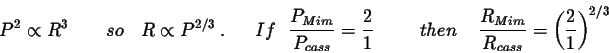
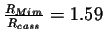
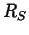

Next: About this document ...
Week 9. Ch. 12: Saturn
Homework: Ch. 12 TorF 1-15, FITB 1-15, Ch. 13 FITB 1-15
Cosmos VI - ``Traveller's Tales"
This video, from Carl Sagan's Cosmos series, compared the ongoing
exploration of Saturn (and Jupiter) by the Voyager
missions to the Age of Enlightenment in Holland. The Dutch were
one of the world leaders in exploration - they had ports along
the Atlantic, and they were leaders in publishing, navigation and
sailing technology. Consequently, they're top thinkers of the day:
Huygens, Leeowenhouk, DeScartes, etc., benefitted from the inflow of
knowledge from other lands. Similarly, modern (1980's) planetary astronomers
benefit from the image ``treasures" returned from Voyager II.
Some Names and Terms from the video:
- JPL - Jet Propulsion Laboratory
- NASA - National Aeronautics and Space Administration
- Carl Sagan
- Rene DesCartes
- John Locke - influenced writers of our Declaration of Independence
- Spinosa
- Rembrandt van Rijn - Dutch painter
- Christian Huygens - understood Saturnian rings, discovered Titan, wave nature of light, inventor, pendulum clock,
beleived the stars were other suns.
- Constantine Huygens
- Anton Leeowenhouk - believed microbial life might exist on Mars
Some gleanings on the planets:
- Jupiter - a ``failed star"
- Io, Europa, Ganymede, Callisto - Galilean moons (near to far from Jupiter)
- Voyager discovers active volcano's on Io
- Europa was inspected real-time by Sagan and others as the data arrived. It appeared
to be lined with fissures with only one, dubious example of a volcanic crater. Clearly
it is an active planet where water ice is the active "rock". Probable water beneath
surface.
Other material discussed in class:
- Saturn's rings and orbital resonances
- If a moon orbits N times while a ring particle orbits M times, and if M and N are
integers, then there is an orbital resonance between the two.
- If M and N are close to 1 (e.g., 1, 2, 3) the resonance will have a
dramatic effect on the ring particles: they will be moved to higher and lower
orbits and a gap will be left behind.
- Cassini's division: largest gap in Saturn's rings.
- Cassini's division is caused by 2:1 resonance with Mimas.
- Ex.) use Kepler's 3rd law to find the ratio of Mimas's orbit size
to that of the Cassini division particles.

- Therefore,
, and this is the ratio used on my
overhead transparencies which show the rings and moons of Saturn.
- Ring-plane crossings
- How frequent? Twice per orbit, or about once every 15 years.
- Last crossing: 1995. Next crossing: 2010
- Current appearance of rings: maximum exposure
- The moons of Saturn
- Pan: very small (20 km), furthest inside Roche limit
- Pandora and Prometheus: shepherds of the F-ring, small, inside Roche limit
- Atlas: Also just inside Roche limit, small
- Janus and Epimetheus: orbital do-se-do (they share an orbit), small
- Mimas: Has big crater, impact almost split the moon, 400 km diameter, causes Cassini division
- Enceladus: 100% albedo(!?), very active, supplies E-ring with dust, 500 km diam.
- Tethys: 3rd of the mid-sized moons, 1060 km diam
- Calypso and Telesto: share Tethys' orbit by staying at Lagrangian points
- Dione: 4th mid-sized moon: 1120 km diam.
- Helene: small (32 km)
- Rhea: has wispy terrain on trailing side, 1530 km diam
- Titan: largest (5150 km diam), has dense atmosphere with hydrocarbons like methane, propane, ethane;
organic chemicals like amino acids
- Hyperion: exhibits chaotic rotation, 370 km
- Iapetus: another moon with a distinctly different leading and trailing side.
- Phoebe: 215 away from Saturn (farthest!), first encounter for Cassini spacecraft
- many of Saturn's moons show only one side towards Saturn
- Most have lots of water ice
- Moons supply ice dust and fragments to the rings
- Mnemonic for the mid-sized moons of Saturn: MET DR THIP
Week 9 and 10. Ch. 13: Uranus, Neptune, Pluto
Uranus - Selected material from class
- Discovery
- William Herschel, 1781
- He found it by chance with a 6-inch diam telescope.
- Appearance: 4.1 arcseconds maximum diameter
- Blue-green
- 5th magnitude: Barely visible to naked eye.
Neptune - Selected material from class
- Discovery
- The orbit of Uranus was deviating from the Newtonian prediction - could
an outer planet be the cause?
- John Adams (Brit) and Urbain Leverrier (French) both calculated a new planet's
position based on Uranus's deviations.
- Adams - Sept. 1845
- Leverrier - June 1846
- Johann Galle - Sept. 1846, finds Neptune within 2 degree of predictions.
- Appearance: 2.4 arcseconds maximum diameter
- Bluer than Uranus
Pluto - Selected material from class
- Discovery
- Clyde Tombaugh, 1930
- Photographed the sky and used "blink comparator"
- Working at Lowell observatory, (so PLuto named after Percival Lowell)
- Doesn't fit well into Terrestrial or Jovian classes.
- Has characteristics of Kuiper Belt Objects (KBO's)
- Eccentric orbit
- Large orbital eccentricity
- Low mass
- Icy composition (like wierd moon's of Neptune too)
- Distance from Sun about 40 AU
- Charon - Pluto's only moon
- Charon - discovered 1978, James Christy
- Charon - largest moon:planet mass ratio (1:6) in solar system
- Charon is gravitationally interlocked with Pluto - they always
keep the same face towards each other.
- Eclipses between 1985-1991 allowed geometry to be descerned.
- Solar System Debris - Selected Material
- Dust, solar wind
- Asteroids
- Meteoroids (smaller than asteroids,
 0.1 km)
0.1 km)
- Meteor - a flash of light in our atmosphere. Usually cometary.
- Meteorite - a rock that reaches Earth's surface from space. Usually from asteroid.
- Kuiper Belt Objects (short period comets)
- Comets
- Video: "The Doomsday Asteroid"
Next: About this document ...
Jason Pinkney
2004-02-20